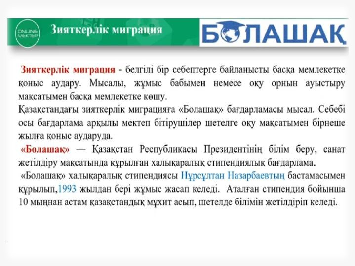
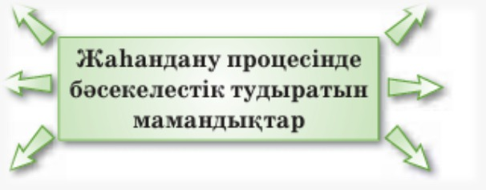
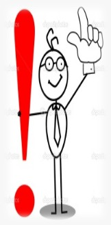

17-ТАПСЫРМА (СӨЖ № 17.1)
Зияткерлік миграция: пайдасы мен қаупі
I. Теориялық кешен (дәріс тезистері)
Мақсаты: Мәтінде көтерілген ақпаратты талдай отырып, негізгі ойды анықтау және ғаламдық мәселелермен байланыстыру.
Міндеттері: Зияткерлік миграция ұғымын түсіндіру; пайдасы мен қаупін анықтау; сын тұрғысынан ойлауды дамыту – студенттердің аналитикалық ойлау қабілеттерін жетілдіру, түрлі көзқарастарды салыстырып, өз пікірін дәлелдей алуына ықпал ету.
Бағалау критерийлері: Коммуникативтік жағдаятқа сай көпшілік алдында дұрыс сөйлей біледі; мәтіндегі негізгі ойды анықтайды; берілген мәліметтер мен пікірлерді өңдейді және толықтырады.
Дәрістің қысқаша тезистері
Жаһандану процесінде білікті мамандарға қол жеткізудегі бәсекелестіктен зияткерлік миграция (маманның белгілі бір себептерге байланысты басқа мемлекетке қоныс аударуы) туындады. Анағұрлым «өтімді» мамандықтардың қатарына медицина қызметкерлерін жатқызуға болады. Денсаулық сақтау саласында дәрігерлер, медбикелер және кіші медициналық қызметкерлер мансапқа жету және жаңа мүмкіндіктерді іздеу мақсатында миграция мүмкіндіктерін пайдалануға тырысады. Соңғы жылдары мұндай миграция деңгейі айтарлықтай өсіп келеді.
Медициналық қызметкерлердің миграциялық үрдісіне сәйкес, елдер негізгі екі топқа бөлінеді: бастапқы немесе тудырушы (донор) елдер және қабылдаушы (реципиент) елдер. Бастапқы елдер мамандар дайындауды жүзеге асырады. Ал қабылдаушы елдер денсаулық сақтау саласындағы қызметкерлерін лайықты жалақымен және еңбек шарттарымен қамтамасыз етеді, өтемақы жүйесін әзірлейді.
Еуропа елдерінде соңғы 30 жылда денсаулық сақтау саласындағы мигрант қызметкерлердің саны әр жыл сайын 5%-ке өсіп отырған. Қазір әлемде медициналық қызметкерлердің тапшылығы байқалады. Әлемдік еңбек нарығында жалпы медициналық қызметкерлер құрамының тапшылығы 4,3 млн адамды құрайды. Медициналық қызметкерлердің 86%-і АҚШ, Канада, Ұлыбритания, Германия, Аустралия сияқты ірі бес елде жұмыс атқарып жүр, ал әлемнің 57 елінде қызметкерлердің жетіспейтіндігі анықталды.
Денсаулық сақтау саласындағы миграцияның негізгі бағыты – Германия және Ұлыбритания. Мұнда мигранттардың кейбірі мемлекеттік құрылымдарда, яғни емханаларда еңбек етсе, кей жағдайларда науқастардың үйіне барып та жұмыс жасауына тура келеді. Миграциялық саясаттағы маңызды бағыт – мигрант-қызметкерлердің құқықтарын ескеру.

1-сурет: Зияткерлік миграция және білікті мамандардың қоныс аударуы
2-сурет: Медицина және ғылым саласындағы кадрлар тапшылығы
Бақылау сұрақтары:
- Зияткерлік миграция дегеніміз не және ол не себепті туындайды?
- Медициналық қызметкерлердің миграциясы қандай елдер арасында жиі кездеседі?
- Бастапқы (донор) және қабылдаушы (реципиент) елдерге қандай міндеттер жүктеледі?
- Медициналық кадрлардың жетіспеушілігі қанша адамды құрайды және бұл қай елдерде байқалады?
- Миграциялық саясатта медициналық қызметкерлерге қатысты қандай маңызды аспект ескерілуі тиіс?
Тапсырманы орындау бойынша нұсқаулық (орындау тәртібі):
- Мәтінді түсініп оқиды, мәтіннен түсінгенін айтады;
- Сұрақтарға жауап береді.
Тапсырмадан күтілетін нәтиже: Берілген ақпаратты оқу, есте сақтап алу, сұрақтарға жауап беру.
Тапсыру формасы: Ауызша түрде.
Модуль / пән бойынша ұсынылатын әдебиеттер тізіміне сілтемелер: Okulyk.kz - Қазақ тілі оқулығы
II. Практикалық кешен (СӨЖ № 17.2)
1-тапсырма. Мәліметтерді салыстыра талдау және сызба дайындау
Тапсырма: Мәтінді оқып, берілген мәліметтерді салыстыра талдаңдар. Негізгі үрдістерді сызба арқылы көрсетіңдер.

3-сурет: Донор және реципиент елдер арасындағы миграциялық ағын
2-тапсырма. Пікір жазу («Мидың ағуын» азайту жолдары)
Тапсырма: Білікті мамандардың шетелге кетуін азайту үшін қандай шаралар жасалуы керек? Өз ойларыңды ортаға салып, пікір жазыңыздар.
Үлгі:
Зияткерлік миграцияны азайту жолдары:
1) Талантты жас мамандарды әртүрлі гранттар мен марапаттар арқылы қызықтыру қажет...
2) Жас ғалымдар мен медицина қызметкерлерінің жалақысын көтеріп, заманауи зертханалармен және баспанамен қамтамасыз ету керек...
3) Мансаптық өсуге және кәсіби дамуға әділ, ашық мүмкіндіктер жасау қажет.

4-сурет: «Мидың ағуы» (Brain Drain) және білікті мамандарды елде ұстап қалу жолдары
3-тапсырма. Қорытынды мәтін жазу
Тапсырма: Түйген ойларыңды қорытындылап, мәтін жазыңдар.
4-тапсырма. Мақал-мәтелдерді талдау және сөйлеу мәнеріне салу
Тапсырма: Мақал-мәтелдер туралы өзіндік тұжырым жасаңдар. Интонацияны (әуен, әуез, тембр, қарқын, кідіріс) сөйлеу мәнеріне сай қолданып, мәнін тарқатып айтыңдар.
- Өзге елде сұлтан болғанша, өз еліңде ұлтан бол.
- Ерден айырылған көмгенше жылайды, елден айырылған өлгенше жылайды.
- Аққу көлін аңсайды, адам туған жерін аңсайды.
- Туған жердің қадірін, шетте жүрсең, білерсің.
- Басқа жердің отынан туған жердің түтіні артық.
- Отансыз адам – ормансыз бұлбұл.
- Туған жер – тұғырың, туған ел – қыдырың.
Модуль / пән бойынша ұсынылатын әдебиеттер тізіміне сілтемелер: Okulyk.kz - Қазақ тілі оқулығы
III. Бағалау парағы
| № | Тапсырма | Дескрипторлар | Ұпай саны | Студенттің ұпай саны |
|---|---|---|---|---|
| 1 | Бақылау сұрақтары: |
• Мәтінді түсініп оқиды, түсінгенін айтады; • Сұрақтарға жауап береді. |
5 балл 5 балл |
|
| 2 | Мәтінді оқып, берілген мәліметтерді салыстыра талдау және сызба дайындау |
• Мәтінді оқиды; • Негізгі үрдістерді сызба арқылы көрсетеді. |
5 балл 20 балл |
|
| 3 | Білікті мамандардың шетелге кетуін азайту бойынша пікір жазу | • Өз ойларын ортаға салып, пікір жазады. | 15 балл | |
| 4 | Түйген ойларды қорытындылап, мәтін жазу | • Түйген ойларды қорытындылап, мәтін жазады. | 20 балл | |
| 5 | Мақал-мәтелдер туралы тұжырым жасау және интонациямен оқу |
• Мақал-мәтелдер туралы өзіндік тұжырым жасайды; • Интонацияны сөйлеу мәнеріне сай қолданып, мәнін тарқатып айтады. |
10 балл 20 балл |
|
| Барлығы: | 100 балл | / 100 | ||